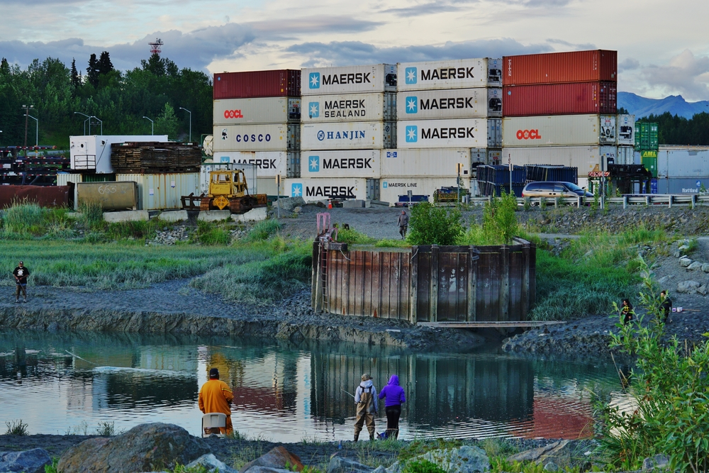
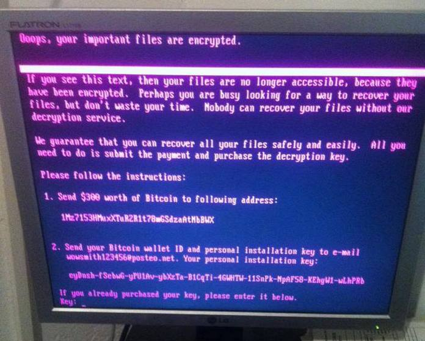

Análisis en grupo de un ciberataque real y su impacto empresarial
Datos Generales
Institución: Universidad Politécnica de San Luis Potosí Materia: CNO V – Seguridad Informática Equipo:
Ávalos Rangel Hazel Mario – 181801
Cabrera Meza Jorge Alejandro – 181591
González Delgado Ángel Josué – 182837
López Castro Diego – 182032
López Monsiváis Jorge Emmanuel – 179842 Profesor: Mtro. Servando López Contreras Fecha de entrega: 30 – Enero – 2026
Introducción contextual
En junio de 2017, un ransomware relacionado con Petya, denominado NotPetya por Kaspersky, comenzó a propagarse a nivel mundial, afectando a cerca de 2000 organizaciones, principalmente en Ucrania. Entre las más impactadas se encontró la
empresa naviera Maersk, cuyos sistemas críticos fueron comprometidos, provocando la interrupción total de sus operaciones y generando graves consecuencias operativas y económicas.
La presente página analiza de forma crítica el ataque de ransomware NotPetya que
afectó a Maersk, evaluando las condiciones de ciberseguridad previas, los factores que
facilitaron el incidente y su impacto, así como su relación con marcos normativos. Además,
contextualiza el caso en el entorno latinoamericano para extraer lecciones aplicables y
proponer medidas concretas, como la gestión de parches, planes de respuesta a incidentes
y la alineación progresiva con estándares internacionales, orientadas a fortalecer la
seguridad de la información en la región.
Contexto General del Ataque
En 2017, el ciberataque NotPetya, originado en el contexto del conflicto geopolítico entre
Rusia y Ucrania, provocó un impacto global sin precedentes al paralizar la logística y el
transporte marítimo de la multinacional Maersk, afectando severamente la cadena de
suministro internacional. Este desastre fue facilitado por una postura de ciberseguridad
interna sumamente debilitada, donde destacaba el uso de sistemas operativos obsoletos y
sin soporte, como servidores con Windows 2000, sumado a una nula segmentación de red
y la falta de implementación de planes de fortalecimiento previamente detectados.
El éxito del ataque se basó en una combinación crítica de fallas: técnicamente, el malware
explotó la vulnerabilidad EternalBlue para propagarse velozmente por una red plana que
carecía de respaldos adecuados; a nivel humano, la infección se activó en la filial ucraniana
mediante el software fiscal comprometido M.E.Doc y el robo de credenciales de
proveedores. Finalmente, el trasfondo político del incidente confirmó que el objetivo
principal era el sabotaje económico a gran escala, transformando una herramienta de
ciberguerra regional en una crisis financiera corporativa de dimensiones históricas para
Maersk.

Figura 1 Maersk.
Línea del Tiempo
Antes del ataque, Ucrania ya se encontraba en un contexto de alta tensión geopolítica. En
2010, Viktor Yanukovych asumió la presidencia del país, pero tras la Revolución de
Euromaidán en febrero de 2014 huyó de Ucrania. Un mes después, en marzo de 2014,
Rusia anexó Crimea por la fuerza. A nivel técnico, el escenario se agravó cuando en abril
de 2017 el grupo Shadow Brokers filtró EternalBlue, una herramienta de la NSA, lo que
permitió en mayo de 2017 la propagación global del ransomware WannaCry, evidenciando
el riesgo de este exploit.
La preparación del ataque NotPetya ocurrió de forma silenciosa. Antes de junio de 2017, el
software fiscal ucraniano M.E.Doc ya había sido comprometido mediante un backdoor. El
22 de junio de 2017 se distribuyó la última actualización aparentemente legítima, aunque el
acceso malicioso ya estaba activo. Este software era utilizado por aproximadamente el 80
% de las empresas en Ucrania, convirtiéndolo en un vector de infección altamente efectivo.
El ataque se ejecutó el 27 de junio de 2017 a las 10:30 UTC (13:30 EEST), cuando se liberó
la actualización maliciosa de M.E.Doc. En cuestión de minutos, la infección se propagó a
bancos, aeropuertos, empresas energéticas y dependencias gubernamentales ucranianas.
Entre 13:00 y 14:00 UTC, NotPetya alcanzó a A.P. Moller–Maersk a través de su oficina en
Odesa, provocando fallas simultáneas en terminales portuarias, grúas y accesos; camiones
quedaron detenidos y 17 terminales resultaron afectadas casi al mismo tiempo.
Alrededor de las 14:00 UTC, el centro de monitoreo de Maersk detectó un comportamiento
anómalo descrito como un “silencio ilógico” en la red, perdiendo visibilidad global desde el
Reino Unido. Aproximadamente dos horas después del inicio del ataque, la empresa tomó
la decisión crítica de desconectar completamente su red global para evitar una mayor
propagación.
En los días posteriores, 17 de los 76 puertos internacionales de Maersk permanecieron
paralizados y los empleados comenzaron a operar manualmente utilizando papel,
WhatsApp y Gmail. Durante más de una semana, las operaciones globales no alcanzaron
un nivel normal de funcionamiento, y casi dos semanas después, las computadoras
personales fueron devueltas gradualmente a los empleados.
La fase de recuperación fue extensa. En aproximadamente 10 días, Maersk logró
reconstruir desde cero cerca de 4,000 servidores y 45,000 PCs. Sin embargo, la
recuperación completa de la infraestructura y las operaciones tomó casi dos meses.
Video
Case study: Maersk Notpetya Ransomware attack - by TheTechForce
Tabla Técnica del Ataque
Elemento
Descripción
Tipo de ataque
Malware destructivo (wiper) disfrazado de ransomware. Sobreescribe el
MBR (Master Boot Record) y cifra la MFT (Master File Table), provocando
una destrucción irreversible de datos y sistemas.
Actor o grupo atacante
Sandworm (Grupo de hackers militares rusos vinculados al GRU,
Inteligencia Militar de la Federación Rusa).
Vector de entrada
Sandworm (Grupo de hackers militares rusos vinculados al GRU,
Inteligencia Militar de la Federación Rusa).
Vulnerabilidad explotada
CVE-2017-0144 (EternalBlue, vulnerabilidad en el protocolo SMBv1 de
Windows para ejecución remota de código), EternalRomance (otra
explotación SMB); Mimikatz para extracción de credenciales de memoria
(LSASS), Sistemas no parcheados y obsoletos.
Etapas del ataque (MITRE ATT&CK)
- Acceso Inicial (T1190: Exploit Public-Facing Application via EternalBlue).
- Ejecución (T1059: Command and Scripting Interpreter via rundll32.exe,
PsExec y WMIC).
- Persistencia (T1547: Boot or Logon Autostart Execution mediante
modificación del MBR).
- Escalada de Privilegios (T1134: Access Token Manipulation).
- Acceso a Credenciales (T1003: OS Credential Dumping de LSASS).
- Descubrimiento (T1046: Network Service Scanning).
- Movimiento Lateral (T1210: Exploitation of Remote Services via SMB;
T1021: Remote Services).
- Impacto (T1486: Data Encrypted for Impact; T1490: Inhibit System
Recovery mediante encriptación de MFT y borrado de logs).
Sistemas o servicios comprometidos
Servidores Windows, 45,000 PCs y laptops, 1,200 aplicaciones críticas de
negocio, red global interna, sistemas de reserva de envíos
(Maerskline.com), terminales portuarias (17 de 76 afectadas, incluyendo
grúas y puertas), bases de datos ERP, comunicaciones sincronizadas con
Microsoft Outlook.
Duración del incidente
Desde el 27 de junio de 2017 (aprox. 10:30 UTC, inicio de la intrusión
global) hasta la restauración total (aprox. 2 meses después, con
reconstrucción de red en 10 días y operaciones a pleno rendimiento en 6-
8 semanas).
Mecanismos de detección y respuesta
Detección: Inicialmente confundido con fallo eléctrico después
confirmado por mensajes de rescate masivos. Respuesta: Desconexión inmediata de la red global (2 a 7 horas).
Reconstrucción completa del Active Directory mediante el traslado físico
de un disco duro desde una oficina en Lagos, Nigeria (único controlador
sobreviviente por un apagón local). Reinstalación masiva de 45k equipos.
Tabla 1. Tabla técnica del ataque.
Tabla de evaluación del Impacto
Principio
Descripción del impacto
Evidencia del caso
Confidencialidad
No se expuso ni robó
información sensible de
manera confirmada por
Maersk. El impacto fue
mínimo, limitado a exposición
potencial durante la infección
interna sin exfiltración externa.
Análisis post-incidente de Maersk y
expertos (Wired, Columbia University)
indican que NotPetya se centró en
destrucción, no en robo de datos. Las
credenciales fueron extraídas localmente
vía Mimikatz para propagación, pero no hay
registros de envío a servidores C2 externos.
No se reportaron brechas de datos
personales o comerciales exfiltrados.
Integridad
Datos y sistemas fueron
alterados irreversiblemente.
Archivos encriptados y
estructuras de disco
corrompidas, afectando la
fiabilidad de la información
crítica.
El malware utilizó AES-128 y RSA para
encriptar archivos, sobrescribió el MBR y
corrompió la MFT, rindiendo irrecuperables
datos en 45,000 endpoints y 4,000
servidores. Aplicaciones como ERP y bases
de datos fueron destruidas
intencionalmente, sin opción de rescate
real.
Disponibilidad
Servicios se interrumpieron y
paralizaron globalmente;
operaciones críticas quedaron
inoperativas durante días,
impactando la continuidad del
negocio.
Operaciones manuales de 10 días para
reconstrucción inicial, afectando 17
terminales portuarias, sistemas de reservas
y comunicaciones. Pérdidas estimadas en
$300 millones. La recuperación dependió de
un backup offline en Ghana.
Tabla 2. Tabla de evaluación del impacto.

Figura 2. Prueba del ataque
8. Cálculo del costo total del ciberataque
Tipo de costo
Descripción
Estimación (MX)
Pérdidas operativas
Se paralizaron 17 de los 76 puertos
internacionales de Maersk y los
sistemas de reservación de envíos
quedaron fuera de servicio
No se cuenta con un aproximado de
la pérdida económica, pero se
calcula que se perdió el 20% de los
volúmenes de envíos en los puertos,
siendo la mayor pérdida de la
empresa. Los puertos eran su fuerte.
Daños reputacionales
Durante el ataque quedaron afectados
los servicios donde se registraba toda
la logística, Maersk tuvo que recurrir a
compensar los pagos a los clientes por
el caso de la carga perdida, carga
dañada y las interrupciones lógicas.
No se cuenta con un aproximado de
los clientes afectados, pero a cada
cliente afectado se le dio una
compensación de millones de
dólares (alrededor de siete cifras)
Costos técnicos
SMaersk después del ataque tuvo que
hacer una reconstrucción completa de
su red, con alrededor de 4,000
servidores y 45,000 computadores
personales
Se estima que el precio de levantar
los servidores y las computadoras
personales ascienden los
$1,714,000,000 de pesos, ya que
hasta la fecha no se cuenta con una
cifra oficial
Costos legales / regulatorios
Se utilizó un centro de emergencia en
el Reino Unido donde se tenían 600
trabajadores y consultores trabajando
simultáneamente
De acuerdo con los cálculos
realizados con prácticas comunes
de cálculo de perdidas en Seguridad
de TI se llegó a la estimación de una
pérdida de $428,000,000
Pago de rescate o extorsión
Se contrató a la firma consultora
Deloitte para llevar a cabo un proceso
de recuperación de sus servidores y
computadoras personales
No se cuenta con una cifra exacta
sobre las consultas realizadas por
Deloitte pero se llegó a la estimación
de $428,000,000 pesos de acuerdo
con cálculos hechos con consultoras
y respuestas.
TOTAL ESTIMADO
De acuerdo al CEO de Maersk, Jim
Hagemann Snabe, se estimó que las
pérdida estimada monetaria ronda
entre los 250 y 300 millones de dólares
lo cual lo empleados consideran que la
cifra está subestimada pero no
proporcional a un monto alternativo.
250-300 millones USD $4,469,375,000.00 -
$5,363,250,000.00 millones de
pesos (MX), de acuerdo con el valor del
peso mexicano frente al dólar según
el Diario Oficial de la Federación,
para el 27 de junio del 2017.
Tabla 3. Calculo de costos.
El impacto de NotPetya en Maersk fue desproporcionado: la pérdida de hasta 300 millones
de USD ($5,363 MDP) superó con creces el presupuesto anual de ciberseguridad del sector
logístico en 2017, que apenas rondaba el 3% al 5% del gasto total en TI. Mientras que el
presupuesto preventivo se enfocaba en defensas perimetrales básicas, el ataque obligó a
una reconstrucción total de la infraestructura (4,000 servidores y 45,000 PC), cuyo costo
técnico de $1,714 MDP por sí solo ya equivalía a años de inversión planificada. En concreto,
el ataque representó un "gasto reactivo" que triplicó lo que la empresa habría invertido en
protección anual, evidenciando que el costo de la resiliencia post-incidente es masivamente
superior a cualquier presupuesto de defensa operativa de la época.
9. Relación con marcos normativos
El incidente no fue una falla aislada, sino una cascada de fallos en controles preventivos.
La organización operaba bajo una arquitectura de red plana que permitió que un
compromiso en un software de terceros escalara a una denegación de servicio global.
En cuanto a la relación con los marcos normativos tenemos:
Escenario de Riesgo
Falla Técnica Observada
Control Relacionado (ISO/NIST)
Impacto Normativo
Recomendación De Remediación
Ataque a Cadena de Suministro
Infiltración vía
actualización de
software
contable
ISO 27001 A.15.1:
Política de
seguridad en las
relaciones con
proveedores.
Incumplimiento
de debida
diligencia
técnica sobre
software de
terceros.
Implementar
entornos de prueba
para toda
actualización de
software antes de
producción.
Movimiento lateral
Red plana que
permitió
propagación de
Ucrania a
centros de datos
globales.
NIST CSF PR.AC5: Segmentación
de red y control de
flujo de
comunicaciones.
Violación de
principios de
resiliensia y
contenido dee
amenazas.
Desplegar
arquitectura de
Microsegmentación
basada en perfiles
de riesgo y
criticidad.
Escalamiento de privilegios
Extracción de
hashes/tokens
de
administrador
en memoria
RAM.
ISO 27001 A.9.4:
Gestión de acceso
privilegiado
Compromiso total del Directorio Activo.
Implementar
Privileged Acces
Management
(PAM) y restringir
credenciales
administrativas
Persistencia y Ejecución
Explotación de protocolo
SMBv1 (EternalBlue) no parchado.
NIST CSF PR.IP-12:
Gestión de
vulnerabilidades y
ciclo de vida de
parches.
Negligencia en el
mantenimiento
preventivo de
infraestructura
crítica.
Establecer SLAs de parcheo de
“Emergencia” (< 24
hrs) para
vulnerabilidades
críticas.
Pérdida de Disponibilidad
Cifrado de
controladores
de dominio y
backups
conectados a la
red.
SO 27001
A.12.3/GDPR Art.
32: Copias de
seguridad y
resiliencia
Incumplimiento
del derecho a la
disponibilidad de
datos
personales.
Implementar la
regla de respaldo 3-
2-1 con
almacenamiento
inmutable y fuera
de línea.
Tabla 4. Relación con marcos normativos.
10. Lecciones aprendidas y recomendaciones
El ataque a Maersk demostró que debilidades técnicas como sistemas obsoletos (Windows
2000) y redes no segmentadas pueden escalar hasta un colapso sistémico global. Fallas
críticas como la nula gestión de parches, el abuso de credenciales privilegiadas y la falta
de control sobre proveedores convirtieron una actualización de software en un vector de
entrada masivo. Para mitigar estos riesgos, habría sido vital aplicar el principio de mínimo
privilegio, implementar monitoreo de tráfico interno y mantener respaldos fuera de línea
para asegurar la recuperación de datos ante desastres.
En México y Latinoamérica, ante presupuestos limitados e infraestructura heredada, es
urgente priorizar la actualización de sistemas bajo marcos internacionales como el NIST.
Las recomendaciones clave incluyen diversificar proveedores para proteger la cadena de
suministro, capacitar al personal y crear planes de respuesta a incidentes locales. En
conclusión, el caso Maersk redefine la ciberseguridad como un pilar estratégico
indispensable, y no un gasto, para garantizar la resiliencia operativa frente a amenazas
avanzadas que trascienden fronteras.
11. Opinión/reflexión técnica del estudiante
El caso NotPetya–Maersk confirma que la ciberseguridad es vital para la continuidad
operativa en un mundo interconectado. En América Latina, donde la brecha digital y el uso
de sistemas desactualizados son retos comunes, la resiliencia no debe ser opcional. Para
fortalecer nuestra región, es imperativo implementar acciones como modernizar la
infraestructura crítica, es decir, priorizar la actualización de sistemas legacy y la gestión de
parches para cerrar brechas que el software obsoleto deja abiertas; así como también la
segmentación y respaldos, es decir, Implementar la división de redes y copias de seguridad
offline, soluciones de alta eficacia y bajo costo para protegerse ante el secuestro de datos
y por último pero no menos importante, aplicar cultura de prevención en PyMEs,
capacitando al capital humano y auditando a proveedores locales, asegurando que el
eslabón más débil de la cadena de suministro no sea la puerta de entrada para ataques
globales.
En definitiva, la estabilidad de las organizaciones latinas depende de entender que la
prevención y la resiliencia son tan determinantes como la tecnología misma.